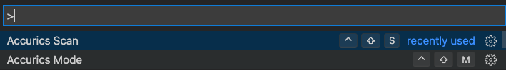
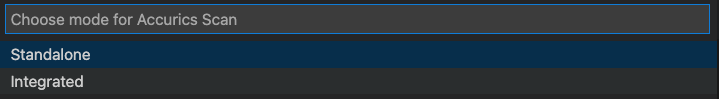
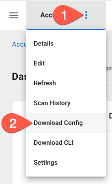

Running the Accurics VS Code Extension
The Accurics VS Code Extension can be run inside of Microsoft VS Code either through a right click action on a file, or the quick launcher.
Prerequisites
- Microsoft VS Code
- Microsoft VS Code Terraform extension
- Terraform version >= .12
- For Integrated mode scans, an Accurics user account with an Operator or greater role
- For Integrated mode scans, an Azure subscription with enough permissions to create a resource and network security group
- For Integrated mode scans, an environment on the Accurics Console to scan your IAC repository that you will be using to create the CI/CD builds
Installation
The first step is to install the Accurics VS Code extension. You can either install it directly from inside VS Code Extension Marketplace itself, or by following this link to the extension documentation and clicking Install on the page.
Note
You must have the Microsoft VS Code Terraform extension for the extension to properly work.
Modes
The Accurics extension has two modes of operation: Standalone and Integrated.
- Standalone mode does not require an Accurics account. Any violations will be printed to the console.
- Integrated mode requires a configuration file and an Accurics account. Violations will be uploaded to the Accurics console and to the local directory in JSON/HTML format.
To select the mode, you can use the Command Palette. The keyboard shortcut for this differs per platform and you can find reference guides on Microsoft's website.
For macOS, the default key bind is Cmd+Shift+P
-
Once in the Command Palette, you can enter Accurics and Accurics Mode will be an option. Select it or hit Enter

-
Select the mode or hit Enter

Standalone
A standalone scan doesn't require an Accurics account and can be run by either right clicking an IaC file, or by using the Command Palette in Microsoft VS Code and selecting Accurics Scan.
Integrated
With inteagrated mode, violations will be uploaded to the Accurics console and to the local directory in JSON/HTML format. It also uses policies set in the console.
Step 1: Download configuration file
Depending on your organization, you may already have a copy of your Accurics configuration file. If one hasn't been supplied to you, it can be downloaded from the Accurics Console.
- Log into the Accurics console
- Click the three vertical dots to open the menu for your environment
-
Click Download Config

-
Save the file to your computer to a folder of your choosing.
Step 2: Run Accurics Configuration
You will need to configure the Accurics extension to use the previously downloaded configuration. To do so:
- Enter the VS Code Command Palette and open
Accurics Configuration - Navigate to the downloaded configuration file and double click the file
Step 3: Scanning IaC
The final step is scanning the IaC. This is done in two stages, first with a one time accurics init and then an accurics scan. The workflow is similar to running Accurics directly from the CLI.
Step 3.1: accurics init
accurics init is a wrapper around terraform init that downloads all the required Terraform providers, and is required prior to running any futher commands.
To run an init, right click a file and select Accurics Scan -> Init
1 2 3 4 5 6 7 8 9 10 11 12 13 14 15 16 17 18 19 20 21 22 | |
Step 3.2: accurics plan
After initalizing the IaC, you must run accurics plan, which is a wrapper around terraform plan that:
- Runs a
terraform plan - Runs an analysis that compares the Terraform code to the resources that Terraform will create
- Generates a dependency graph
- Outputs JSON and HTML files listing any violations
- Gives you a summary of how many resources are in the Terraform code, and number of violations sorted by severity
- Uploads the results to the Accurics Console so they can be viewed online
To run a plan, right click a file and select Accurics Scan -> Plan
1 2 3 4 5 6 7 8 9 10 11 12 13 14 15 16 17 18 19 20 21 22 23 24 25 26 27 28 29 30 31 32 33 34 35 36 37 38 39 40 41 42 43 44 45 46 47 48 49 50 51 52 53 54 55 56 57 58 59 60 61 62 63 64 65 66 67 68 69 70 71 72 73 74 75 76 77 78 79 80 81 82 83 84 85 86 87 88 89 90 91 92 93 94 95 96 97 | |
Step 4: Viewing results
The Accurics extension outputs results in a few ways.
- In the Accurics Console
- To
stdoutin the VS Code Output pane - A JSON blob in the directory you ran the Accurics CLI from
- An HTML file that is also in the directory you ran the Accurics CLI from